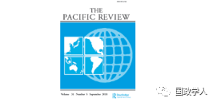
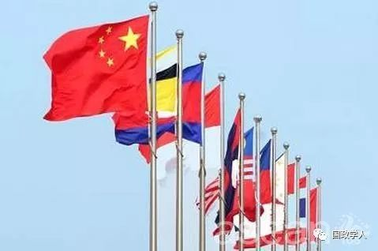
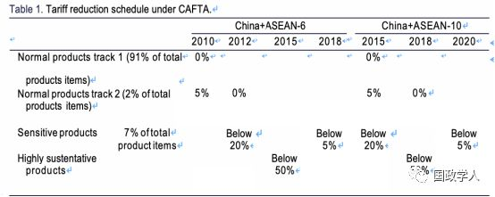
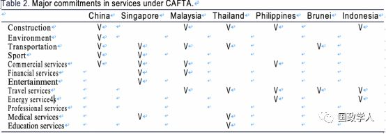

收录于合集

简 介
【作者】 江敏华（Min-Hua Chiang），新加坡国立大学东亚研究所研究员。
【整理】 彭小朵
【来源】 China ASEAN economic relations after establishment of free trade area, The Pacific Review, Published online: 10 May 2018.
【期刊介绍】 《太平洋评论》（The Pacific Review）主要聚焦亚太地区国家的国内政治决策与国际互动，论文内容涉及国内与国际政治、经济变迁与互动、商业及工业政策、军事政策与文化议题。2017年该杂志影响因子为1.809，在85家国际关系期刊中排名第23位，在68个区域研究期刊中排名第6位。

【期刊网址】 https://www.tandfonline.com/toc/rpre20/current
【审核】 高嘉琳 庞林立
【提纲】
Introduction
Successive development of the CAFTA
Changes in China–ASEAN economic relations after the CAFTA
Conclusion
摘要
本文旨在帮助了解2010年中国—东盟自由贸易区（CAFTA）成立后中国—东盟经济关系所发生的重大变化。 **首先，自 2012年以来，中国对东盟的商品贸易由逆差转为顺差，**这反映了中国在制造业生产方面占据优势。 其次， 随着中国的工资水平上涨， 东盟投资者无法利用中国的廉价劳动力。同时，中国对东盟的投资保持增长，且投资领域呈现多样化。 新加坡一直是中国最重要的投资目的地，也是中国在东盟国家中最大的外国投资者。 第三，中国在向东盟提供建筑、电信、计算机和信息服务以及其他商业服务方面具有比较优势。最后，伴随着经济区域主义的发展，尤其是区域全面经济伙伴关系和跨太平洋伙伴关系，将对 CAFTA在区域经济一体化以及未来中国与东盟关系中发挥出愈加重要的作用。
**
**
关键词： 中国—东盟自贸区；区域全面经济伙伴关系（RCEP）；跨太平洋伙伴关系（TPP）；中国—东盟货物贸易；中国—东盟服务贸易；中国对东盟的投资
简介Introduction

CAFTA自2010年1月1日起生效。随着CAFTA的贸易和投资规则放宽，中国与东盟十国之间的经济联系逐渐强化。CAFTA的发展可以追溯到20世纪90年代。冷战的结束以及中国越来越多地参与区域生产网络，推动建立制度化的经济关系。亚洲金融危机是中国与东盟经济合作的又一推动力，它提醒亚洲各国领导人有必要在该地区建立一个合作框架，以预防未来的金融混乱。 作者认为，中国之所以与东盟发展合作关系，存在经济与政治方面的两种考量。而东盟则是出于吸引外国投资、进入中国市场、战略考量等方面的原因，与中国建立更加密切的经济关系。本文作者通过比较 CAFTA成立前后的双边贸易和投资数据，旨在阐明CAFTA的初步影响以及对中国与东盟关系的整体影响。
CAFTA的持续性进展Successive development of the CAFTA
2001年11月，在东盟首脑会议上，东盟和中国领导人赞同关于双边经济合作框架的提案。2002年，《中国—东盟全面经济合作框架协议》被正式签署，成为管理中国—东盟经济合作的法律文书。此外双方领导人还同意实施《早期收获计划》，即双方于2004年1月1日开始降低关税，2006年，以农产品为主的500多种产品将率先在中国与泰国、马来西亚、文莱、印尼、菲律宾、新加坡这六个东盟国家内免税交易。
CAFTA 由三个主要协议组成：2004年11月签署的《货物贸易协议》，2007年1月签署的《服务贸易协议》和2009年8月签署的《投资协议》，它们在随后的几年中经过多次升级和修订。
**《货物贸易协议》旨在降低 90％以上产品的税率。**中国与东盟的货物交易产品可分为四类，包括一轨正常产品、一轨正常产品、一般敏感产品和高度敏感品。关税减让详情将根据产品类别和国家生效，具体如表1所示：

《服务贸易协议》基于清单，将自由化的承诺明确指向双方所列出的贸易领域， 具体如表2所示。中国对东盟的主要承诺包括建筑、环境、运输和商业服务。中国在上述行业的主要额外开放措施包括独家投资者的投资、放宽外国持股比例以及东盟投资者的国民待遇。作为回报，东盟六国同意提供更多的开放措施。2011年11月,中国与东盟签署了《关于实施中国—东盟自贸区〈服务贸易协议〉第二批具体承诺的议定书》，2012年1月1日生效。中国对商业服务、电信、建筑、分销、财务、旅游和运输进行了调整。与此同时，东盟国家也将更多部门纳入第二个议定书。

**《投资协议》自 2010年实施以来，更多地强调“投资保护”而非“投资自由化”。**例如，该协议对赔偿损失，转移和遣返等提供具体方案，也规定了“促进投资”和“投资便利化”，但没有关于如何促进投资和促进投资便利化的具体措施。
除了贸易和投资协议外，中国和东盟还致力于五个优先领域的经济合作，即农业、信息和通信技术、人力资源开发、投资、湄公河流域开发。其他合作领域包括但不限于银行、金融、旅游，工业合作、能源和次区域发展等。2015年，中国与东盟就包括商品、服务、投资和经济技术合作在内的广泛问题进行了自贸协定升级谈判。由于大多数商品已经免税，升级的CAFTA重点是促进进一步的货物贸易便利化程序和更多的服务开放措施。
简而言之， CAFTA不仅包括贸易和投资，还包括不同部门的广泛合作。其重要特征是根据每个国家不同的发展水平，降低关税，为外国直接投资、开放商品贸易等制定时间表。
CAFTA 后中国-东盟经济关系的变化
Changes in China–ASEAN economic relations after the CAFTA
CAFTA建成后，中国—东盟经济关系发生变化。在中国—东盟双边贸易方面，全球金融危机之后，中国对东盟的出口增长强劲，自2012年后，由贸易顺差转变为贸易顺差。其原因主要包括两点：一是在东盟国家中，越南是中国与东盟贸易顺差增长的最重要因素，中越间的贸易顺差远远高于中国与其他主要东盟国家的贸易顺差。其次，中国对电动机械和矿物燃料的需求减少。在中国—东盟双边投资方面，近年来，中国对东盟投资呈现强势增长的趋势。由于资源禀赋、市场规模和地理位置等因素，中国扩大对东盟地区的直接投资，主要集中在服务业、制造业等行业。然而，东盟对中国投资规模却不大。除新加坡对中国的投资继续稳步增长，其余东盟国家（如马来西亚，菲律宾和印尼）对中国的投资在过去几年中呈下降趋势。在中国—东盟双边服务贸易潜力方面，作者进行了优势对比。第一，中国和东盟都在“运输”和“使用知识产权（IPR）”方面进行服务贸易。第二，旅游服务方面，中国的运营规模很大（1078亿美元），而东盟则在顺差（436亿美元）。第三，金融服务领域，东盟比中国拥有更多的优势，尤其是新加坡。第四，中国在建筑、电信，计算机和信息服务以及其他商业服务方面有着较大的贸易顺差。
CAFTA与亚太经济区域主义The CAFTA in the Asia-Pacific economic regionalism
中国和东盟是经济区域主义迅速发展的积极参与者。截至2016年12月，中国已与亚太地区重要经济体签订双边自由贸易协定，如韩国、新西兰、东盟等。东盟亦与日本、韩国、印度、澳大利亚和新西兰签订自由贸易协定。亚洲经济体之间越来越多的双边自由贸易协定为发展更广泛的泛亚区域主义铺平道路。目前正在谈判的区域自由贸易协定是《区域全面经济伙伴关系协定》（RCEP）和《跨太平洋伙伴关系协定》（TPP）。
RCEP是东盟十个成员国与澳大利亚、新西兰、中国、韩国、日本和印度之间的自由贸易协定，于2012年11月在柬埔寨东盟峰会上正式启动，旨在将东盟所有的双边自由贸易协定与其他国家联系起来，成为一项全面的贸易协定。与CAFTA比，RCEP是一个更具包容性的自由贸易协定，它包括货物贸易、服务、投资、经济和技术合作、知识产权、竞争和争端解决等。鉴于参与RCEP的国家越来越多，经济区域主义将从CAFTA扩大RCEP，如果成功，将进一步加强区域生产网络。但是由于RCEP的成员国处于不同的发展阶段，因此很难调和它们在贸易谈判中的不同利益，因而RCEP可能只能实现有限的贸易和投资自由化。
与以亚太地区为基础的RCEP不同，TPP最初是一个跨区域自由贸易协定，涵盖不同大陆的国家。 RCEP将其成员资格限制在预选的16个国家与地区中，而TPP的开放式架构允许新成员加入。如果成员国的数量越来越多，RCEP与TPP之间趋同的可能性就越大。然而，在某种程度上，从CAFTA到RCEP和TPP的顺利发展，均表明东盟作为一个旨在管理地区事务的规范建设机构的作用正在下降。但是由于南海争端、日韩之间不信任等因素的存在，RCEP的谈判进程将受到影响。
结论Conclusion
密切的经济关系、区域化趋势和地缘政治因素都促使CAFTA继续向前发展。CAFTA成立后中国—东盟双边经济关系的重大变化可归纳如下：第一，就商品贸易关系而言，自2012年以来，中国对东盟的商品贸易由逆差转为顺差。第二，双边投资在过去几年中经历结构性变化。东盟对中国的投资一直在放缓，而中国对东盟的投资则呈现明显增长。第三，虽然目前中国—东盟的双边服务贸易不如商品贸易显着，但双边服务贸易方面有很大的发展潜力。
CAFTA并不是影响中国—东盟经济关系的唯一因素。双边贸易和投资的结构性变化可能是双方发展差距扩大的结果。换句话说，双边经济关系的变化是对中国经济崛起的反映，CAFTA在某种程度上只是促进了这一进程。此外，尽管投资自由化进展甚微，但CAFTA的重要意义在于它为发展中国家加入区域经济协议提供了机会。东盟的发展中国家可以借此更多地进入其他国家市场而不必牺牲其经济利益。最后， CAFTA的顺利推进并不意味着RCEP和TPP会成功实施，如果两者成功结合，CAFTA在促进区域经济一体化方面的重要性将会降低。另一方面，如果两者都失败，CAFTA将成为促进该地区其他形式多边自由贸易协定的重要机制。
印度于1990年代提出东望政策，以期提升东南亚国家在对外政策议程上的战略重要性。而在冷战后，印度、东南亚国家互动模式和先前的差异在于以历史、文化、意识形态相似性为基础，建立地区间的经济依赖、政治参与行为，并整合地区安全利益。就此而言，与其将印度提出的东望政策视为recalibration，不如看作reincarnation，重视于东南亚地区实际参与行为，而非仅提倡「第三世界的团结」。
东望政策缘起仍有争议，不过1992年印度与东盟对话机制的建立被广泛认为是其雏形。东望政策是由印度总理Narasimha Rao于1994年拜访新加坡，发表希望于东南亚地区促进新伙伴关系的演讲时所提出（当时尚未使用「东望」这个词汇）。虽然在1992–1993年的年度报告中，印度外交部提及「印度决定提出相应政策以推进与东盟间的关系」，但「东望政策」是到1995–1996的年度报告中才首次被正式使用。然而早在1980年代，似东望政策的「东向命运」便已被提出。
本段后半部分，本文作者分从印度政府内部观点，及外部因素影响讨论：
一、 印度政府内部观点 ：此部分提及印度对于东南亚地区态度的转变，以及印度外交政策的再定位，并指出东望政策在印度外交政策重要性的提升。
二、 外部因素影响 ：此部分指出新加坡在新德里对于东南亚地区态度、政策的转变上具促进作用。并就东盟自1990年代的发展、扩员作简要叙述；亦讨论越南、缅甸、印尼、泰国、马来西亚等国加入东盟对于印度的意涵及影响。
扫描下方二维码查看原文pdf
更多阅读
国政学人 （ID：guozhengxueren)
为方便学人及时阅读高质量文章
别忘把国政学人设置 星标 哦~


国政学人
支持学术公益与知识传播
微信扫一扫赞赏作者 __赞赏
已喜欢，对作者说句悄悄话
取消 __
发送给作者
发送
最多40字，当前共字
上一页 1/3 下一页
长按二维码向我转账
支持学术公益与知识传播
受苹果公司新规定影响，微信 iOS 版的赞赏功能被关闭，可通过二维码转账支持公众号。